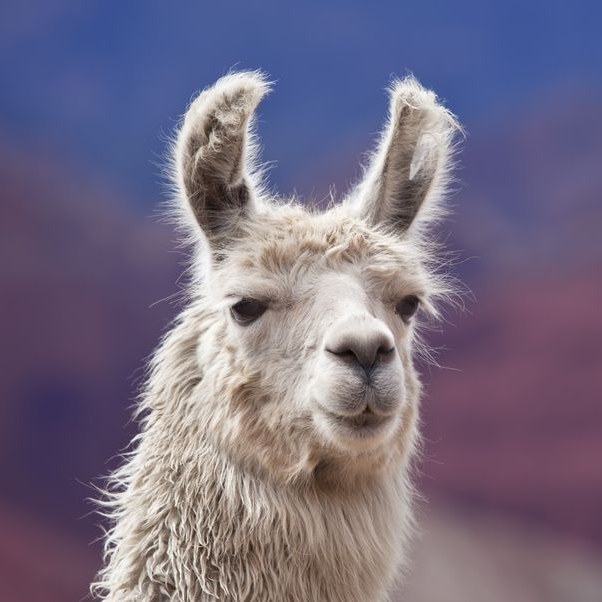

|  | |
Llama |
Llama adalah binatang berambut tipis camelidae yang juga binatang asli Amerika Selatan. Llama juga biasa digunakan sebagai binatang pengangkut barang oleh masyarakat Inka dan masyarakat di sekitar pegununungan Andes. |
Nama Latin : Lama glama |